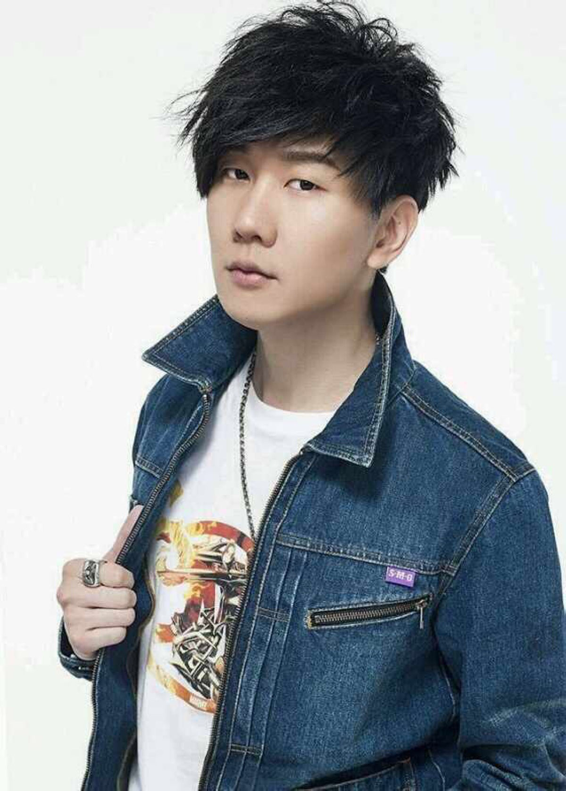

林俊杰（JJ Lin），1981年3月27日出生于新加坡，华语流行乐坛男歌手、词曲创作者、音乐制作人。
2003年发行首张创作专辑《乐行者》 [1] 。2004年凭专辑《第二天堂》中的《江南》一曲成名 [2] 。2014年以专辑《因你而在》夺得第25届台湾金曲奖最佳国语男歌手奖 [3] 。2016年以专辑《和自己对话》获得第27届台湾金曲奖最佳国语男歌手奖 [4] ， 并推出个人首部音乐纪录片《听·见林俊杰》 [5] 。截止到2017年，已发行13张正式专辑，累计创作数百首歌曲。
2007年成立个人音乐制作公司JFJ Productions。2008年创立潮流品牌SMG。2016年获得国际汽车联盟（FIA）职业赛车执照 [6] 。2017年成立“SMG”电竞战队 [7] 。
2004年、2015年两度受邀演唱新加坡国庆庆典主题曲 [8] ，担任2008年北京奥运会 [9] 及2010年新加坡青奥会 [10] 火炬手，创作并演唱2010年上海世博会新加坡馆主题曲《感动每一刻》 [11] 。凭借在音乐创作与慈善公益等方面的表现，2009年荣获新加坡杰出青年奖 [12] ，2014年获得第5届通商中国青年奖 [13]
2018年3月17日，林俊杰“圣所”世界巡回演唱会从上海起跑 [14] ；7月14日，“圣所”演唱会将在长沙湖南国际会展中心 [15] 开唱。
| 目录 |
|
| 中文名 | 别名 | 星座 | 林俊杰 | JJ | 天蝎座 |
1981年3月27日，林俊杰出生于新加坡的一个音乐世家。在父母的引导下，4岁就开始学习古典钢琴，不善言辞的他由此发现了另一种与人沟通的语言。小时候的林俊杰把哥哥当作偶像，跟随哥哥的步伐做任何事，直到接触流行音乐后，便爱上创作这一条路。
1996年，林俊杰开始参加各种歌唱比赛，前后获得多个词曲创作和演唱大奖。1999年，海蝶音乐在“非常歌手训练班”发现了他。这个腼腆害羞、并不起眼的高中生，却在自弹自唱的时候，展现了对音乐的纯真热忱。当时在学校成绩优秀的林俊杰，在已收到新加坡国立大学入学通知的情况下，放弃升学，与海蝶签下一纸合约，从此开启了他的音乐道路。
新加坡男性均须服兵役，林俊杰亦不例外。由于专长，他加入的是新加坡武装部队文工团。服兵役期间，他积累了大量的舞台表演经验，同时也尝试了无数创作。尽管早期屡遭“打枪”，但在老师的正确引导鼓励下，极具天赋又非常努力的他，终于谱出了令老师首肯的曲子，这便是2001年收录在张惠妹专辑里的《记得》。此后，林俊杰为庾澄庆、阿杜、王心凌等人创作多首主打歌曲，他的创作才华终于得以展示 [16] 。
2003年，发行首张全创作专辑《乐行者》。虽然时逢SARS，但他和团队不轻言放弃，在3个月内走遍26个城市，进行了上百场演出，奠定了之后在中国大陆的稳固基础。
2004年，游走大陆，让从小接受英语教育的林俊杰首次体验中华文化所带来的冲击，结合西方R&B现代曲风以及中国风的《江南》（台版为《第二天堂》）专辑由此诞生 [2] ，同年更凭借《乐行者》专辑拿下第15届台湾金曲奖最佳新人奖 [17] 。
2009年4月8日，受邀参加为祝贺新加坡总统星光慈善圆满10周年的“总统嘉勉荣誉表演”，接受总统的直接肯定 [149] 。7月5日，获得由新加坡总统亲自颁发的新加坡杰出青年奖 [12] 。
008年5月12日，汶川大地震发生，林俊杰用两天一夜创作《爱与希望》，成为赈灾歌曲创作第一人，随后共参加数十场赈灾义演帮助募集善款 [155] 。亲自到灾区实地探访，看望医院受伤灾民，个人累计捐款过百万，此外还有多次物资捐赠 [156] 。因地震后的爱心善举，中国邮政总公司将其肖像载入了“演艺界爱心捐助纪念典藏邮票册”，特别发行其个人邮票纪念册 [157] 。12月，马来西亚《JJ陆》慈善签唱会，收入全捐给马来西亚砂捞越精神保健协会。
2010年1月，担任搜狐“公益Easy Go”活动推广大使，推广“新年新希望，帮助山区孩子多读一年书”公益主题 [162] 。2月，实地探访八八水灾中受创严重的原住民部落，赠送文具礼物给台湾省屏东县青叶国小，并将宣传服拍卖所得全数捐出 [163] 。4月10日，将澳洲墨尔本个人演唱会门票利润的一半捐给西南干旱灾区 [164] 。11月3日，出席由可口可乐、普莱尔基金会及中国预防性病艾滋病基金会联合举办的“盖瑞·普莱尔慈善高尔夫邀请赛暨慈善拍卖晚宴”，95万拍得钢琴家郎朗1对1钢琴课1小时 [158] 。
2013年5月14日，出席香港“Kiehl's - Be the Ultimate Men” 慈善相展开幕活动，所募善款将捐献给由萧芳芳创立的“护苗基金”。10月31日，出席粉红丝带乳癌防治宣导活动慈善晚宴，为台湾癌症临床研究发展基金会募集善款。11月4日，出席由可口可乐、普莱尔基金会、中国预防性病艾滋病基金会联合举办的“盖瑞·普莱尔慈善高尔夫邀请赛暨慈善拍卖晚宴”，以46万拍下两套豪华高尔夫游组合 [170] 。12月4日，参加“LOVE LIFE”计划慈善演唱会，为唐氏症基金会筹集善款，呼吁大众关爱唐氏症儿童和家庭 [171] 。
2009年5月4日，出席意大利运动品牌Kappa与内地首席潮流媒体《YOHO！潮流志》举办的Kappa-YOHO潮流盛典开幕式 [176] 。9月4日，出席Swatch MTV Playground创意大赛中国赛区决赛盛典 [177] 。11月19日，出席2009年潮流盛典颁奖典礼，获颁“年度潮流价值人物”、“年度潮牌掌柜” [178] 。
早年经历 [1]
演艺经历 [2]
回到顶端